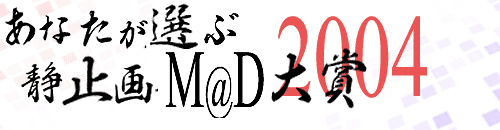
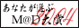

|
今回も開催の運びとなりました｡ ページデザインは美凪ちよ様の過去の大賞ページを継承させていただいてます。 |
主催の言葉
2005年2月9日更新
2005/02/12 DiG氏のコメントを追加しました。 集計結果 （集計結果はコチラから。） M@D大賞2004仕様・概要 （投票部門・投票規定等はこちらを参照してください。） |
| 2004年対象リスト |
|
2004ベスト静止画M@D部門(未確定)/ 2005年1月16日更新
参考程度にはなるかと思います。 リストに未記入でも､2004年作品であれば投票は可です｡ ※「2004ベスト静止画M@D部門」リストはコじゃっく部屋のDataBase､F改氏のリストを元に､ 多くの方の情報提供を加えて不完全ながらも作成されております。 情報提供していただいた方々には厚く御礼申し上げます。 修正すべき点にお気づきの方は御連絡いただけると幸いです。 ※「デモムービー・同人ムービー部門」リストはmovie conceptionのИΔЗ氏に提供していただきました｡ ありがとうございます。 |
| ご意見・問い合わせ等 |
|
ご意見・対象リストの不備がございましたら、メールにて受付けます。 主催： うむむ 協賛： M@Dscene;Complemened(異端) コじゃっく部屋(ここ&じゃっく&PJ) Skyscraper(ばばんばーん) 宇治軍団(檸檬来夢) movie conception(ИΔЗ) ※このページはリンクフリーです。 バナーはお好きなものをお使いください。   |
| 過去の大賞 |


|